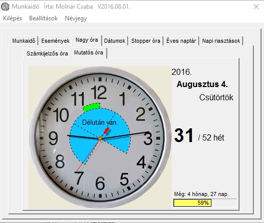
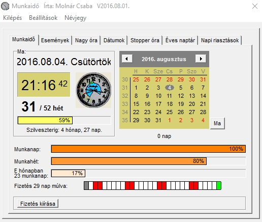

Munkaidő
(Folyamatosan
frissítem újabb
verzióval.)
1 műszakos, heti 5 munkanapos
(szombat
és vasárnap
szabadnap) munkabeosztás
időadatait
számító és
megjelenítő program. Emellett képes 6 tetszőleges
eseményig
hátralévő (vagy az
azóta eltelt) idő kijelzésére. Tartalmaz
két dátum
különbségét
számító funkciót és stopper
órát. Éves
naptár, a napok
egyedileg beszínezhetők. Praktikus volta és
egyszerű
kezelhetősége miatt minden
alkalmazott napi szinten
használt programja
lehet.


Telepíteni nem kell, egyetlen .exe file-ból
áll,
amit tetszőleges mappába lehet másolni
(kicsomagolva) és onnan
futtatható. A registry-be nem írja be magát.
Munkaido.zip
v2016.08.01.
Szöveges vágólap
A vágólap szöveges tartalmát
elmentő és visszatöltő program, 20
memóriával és egy nagyon egyszerű szöveges
szerkesztővel. Ezen kívül képes egy
gombnyomásra a vágólapon lévő,
formázott szöveget egyszerű, formázatlan
text-té
alakítani, akkor is, ha csak a háttérben fut.
Mire jó? Pl. Word szöveg vagy WEB lap
tartalom
átmásolása úgy, hogy ne vigye át a
forrás szöveg formátumát, hanem az a
formátum maradjon meg, amibe be akarjuk másolni a
szöveget. (Használata: forrás szöveg
kijelölés, Ctrl+C, Ctrl+T
("T", mint Text: formázások
eltávolítása),
Ctrl+V-vel beillesztés a cél szövegbe). Ezen
kívül a gyakran használt szövegeket (pl.
levél aláírást, jelszavakat, email
címeket) egy
gombnyomással a vágólapra lehet másolni.
Telepíteni nem kell, egyetlen .exe file-ból
áll,
amit tetszőleges mappába lehet másolni
(kicsomagolva) és onnan
futtatható. A registry-be nem írja be magát.
SzovegesVagolap.zip
V2015-06-06
mm
és mil
között, oda-vissza
átváltó program.